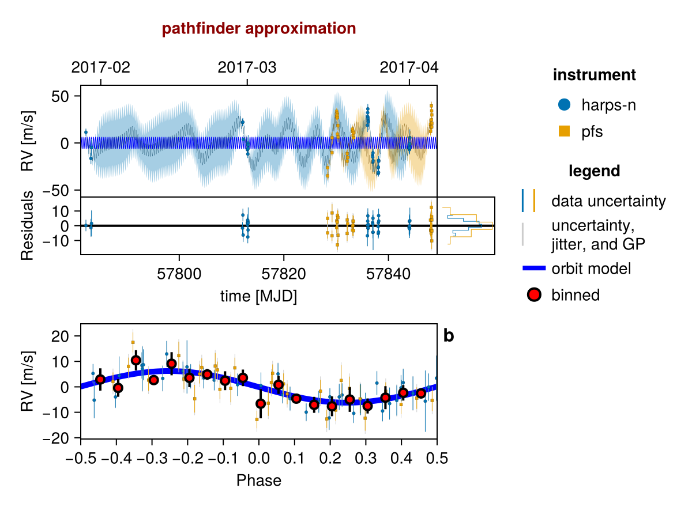
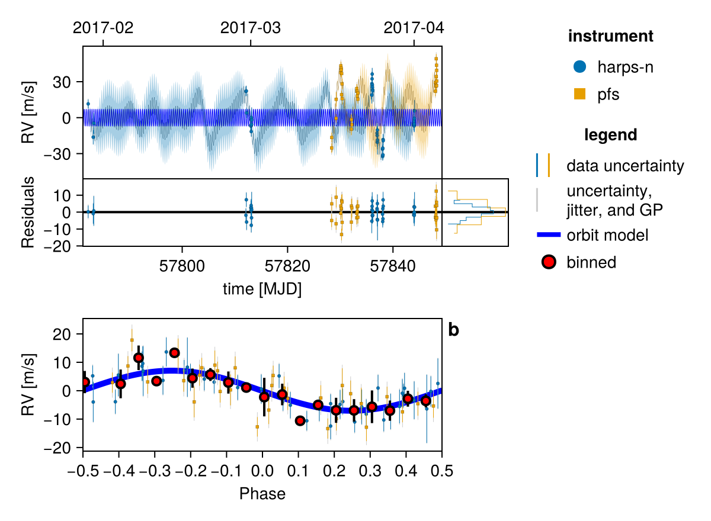
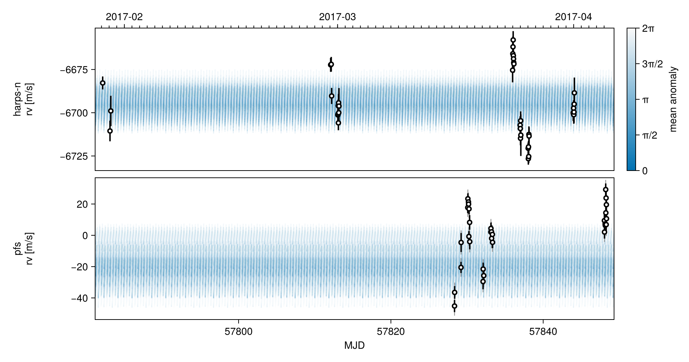
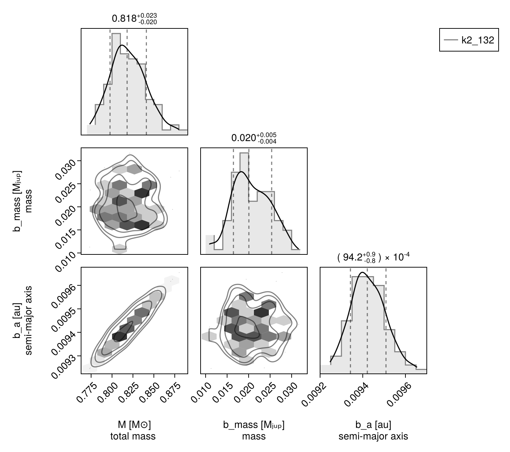
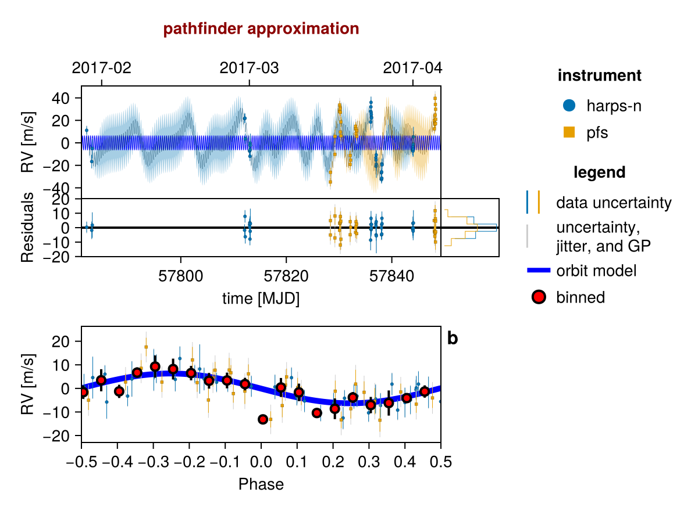
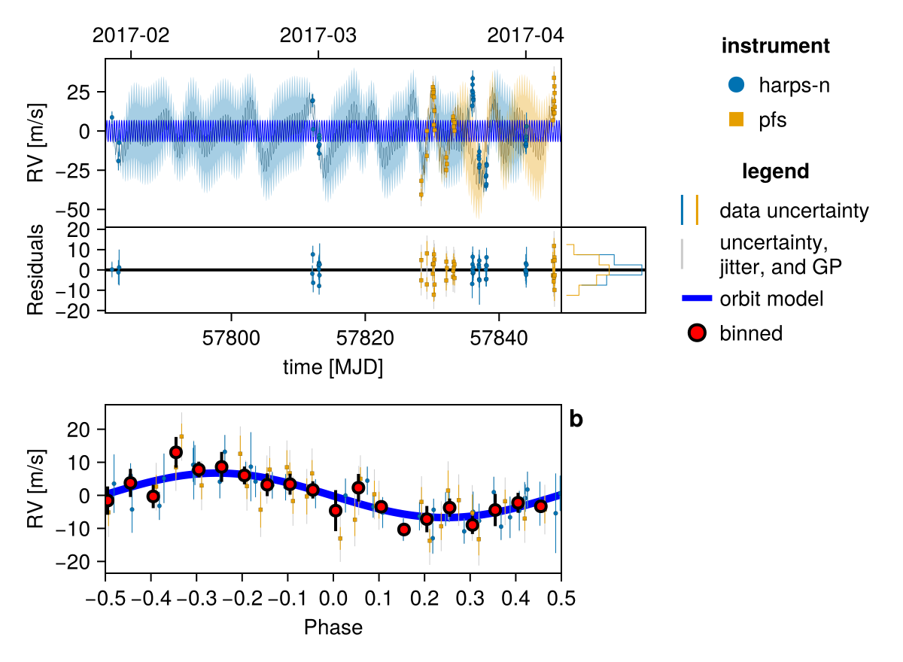

Fit Gaussian Process
This example shows how to fit a Gaussian process to model stellar activity in RV data. It continues from Basic RV Fit.
Radial velocity modelling is supported in Octofitter via the extension package OctofitterRadialVelocity. To install it, run pkg> add OctofitterRadialVelocity
There are two different GP packages supported by OctofitterRadialVelocity: AbstractGPs, and Celerite. Important note: Celerite.jl does not support Julia 1.0+, so we currently bundle a fork that has been patched to work. When / if Celerite.jl is updated we will switch back to the public package.
For this example, we will fit the orbit of the planet K2-131 to perform the same fit as in the RadVel Gaussian Process Fitting tutorial.
We will use the following packages:
using Octofitter
using OctofitterRadialVelocity
using PlanetOrbits
using CairoMakie
using PairPlots
using CSV
using DataFrames
using DistributionsWe will pick up from our tutorial Basic RV Fit with the data already downloaded and available as a table called rv_dat:
rv_file = download("https://raw.githubusercontent.com/California-Planet-Search/radvel/master/example_data/k2-131.txt")
rv_dat_raw = CSV.read(rv_file, DataFrame, delim=' ')
rv_dat = DataFrame();
rv_dat.epoch = jd2mjd.(rv_dat_raw.time)
rv_dat.rv = rv_dat_raw.mnvel
rv_dat.σ_rv = rv_dat_raw.errvel
tels = sort(unique(rv_dat_raw.tel))2-element Vector{InlineStrings.String7}:
"harps-n"
"pfs"Gaussian Process Fit with AbstractGPs
Let us now add a Gaussian process to model stellar activity. This should improve the fit.
We start by writing a function that creates a Gaussian process kernel from a set of system parameters. We will create a quasi-periodic kernel. We provide this function as an arugment gaussian_process to the likelihood constructor:
using AbstractGPs
gp_explength_mean = 9.5*sqrt(2.) # sqrt(2)*tau in Dai+ 2017 [days]
gp_explength_unc = 1.0*sqrt(2.)
gp_perlength_mean = sqrt(1. /(2. *3.32)) # sqrt(1/(2*gamma)) in Dai+ 2017
gp_perlength_unc = 0.019
gp_per_mean = 9.64 # T_bar in Dai+ 2017 [days]
gp_per_unc = 0.12
rvlike_harps = StarAbsoluteRVLikelihood(
rv_dat[rv_dat_raw.tel .== "harps-n",:],
instrument_name="harps-n",
variables=(@variables begin
offset ~ Normal(-6693,100) # m/s
jitter ~ LogUniform(0.1,100) # m/s
# Add priors on GP kernel hyper-parameters.
η_1 ~ truncated(Normal(25,10),lower=0.1,upper=100)
# Important: ensure the period and exponential length scales
# have physically plausible lower and upper limits to avoid poor numerical conditioning
η_2 ~ truncated(Normal(gp_explength_mean,gp_explength_unc),lower=5,upper=100)
η_3 ~ truncated(Normal(gp_per_mean,1),lower=2, upper=100)
η_4 ~ truncated(Normal(gp_perlength_mean,gp_perlength_unc),lower=0.2, upper=10)
end),
gaussian_process = θ_obs -> GP(
θ_obs.η_1^2 *
(SqExponentialKernel() ∘ ScaleTransform(1/(θ_obs.η_2))) *
(PeriodicKernel(r=[θ_obs.η_4]) ∘ ScaleTransform(1/(θ_obs.η_3)))
)
)
rvlike_pfs = StarAbsoluteRVLikelihood(
rv_dat[rv_dat_raw.tel .== "pfs",:],
instrument_name="pfs",
variables=(@variables begin
offset ~ Normal(0,100) # m/s
jitter ~ LogUniform(0.1,100) # m/s
# Add priors on GP kernel hyper-parameters.
η_1 ~ truncated(Normal(25,10),lower=0.1,upper=100)
# Important: ensure the period and exponential length scales
# have physically plausible lower and upper limits to avoid poor numerical conditioning
η_2 ~ truncated(Normal(gp_explength_mean,gp_explength_unc),lower=5,upper=100)
η_3 ~ truncated(Normal(gp_per_mean,1),lower=2, upper=100)
η_4 ~ truncated(Normal(gp_perlength_mean,gp_perlength_unc),lower=0.2, upper=10)
end),
gaussian_process = θ_obs -> GP(
θ_obs.η_1^2 *
(SqExponentialKernel() ∘ ScaleTransform(1/(θ_obs.η_2))) *
(PeriodicKernel(r=[θ_obs.η_4]) ∘ ScaleTransform(1/(θ_obs.η_3)))
)
)
## No change to the rest of the model
planet_1 = Planet(
name="b",
basis=RadialVelocityOrbit,
likelihoods=[],
variables=@variables begin
e = 0
ω = 0.0
# To match RadVel, we set a prior on Period and calculate semi-major axis from it
P ~ truncated(
Normal(0.3693038/365.256360417, 0.0000091/365.256360417),
lower=0.0001
)
M = super.M
a = cbrt(M * P^2) # note the equals sign.
τ_x ~ Normal()
τ_y ~ Normal()
τ = atan(τ_y, τ_x)/2π*1.0
tp = τ*P*365.256360417 + 57782 # reference epoch for τ. Choose an MJD date near your data.
# minimum planet mass [jupiter masses]. really m*sin(i)
mass ~ LogUniform(0.001, 10)
end
)
sys = System(
name = "k2_132",
companions=[planet_1],
likelihoods=[rvlike_harps, rvlike_pfs],
variables=@variables begin
M ~ truncated(Normal(0.82, 0.02),lower=0.1) # (Baines & Armstrong 2011).
end
)
model = Octofitter.LogDensityModel(sys)LogDensityModel for System k2_132 of dimension 17 and 70 epochs with fields .ℓπcallback and .∇ℓπcallback
Note that the two instruments do not need to use the same Gaussian process kernels, nor the same hyper parameter names.
Tip: If you want the instruments to share the Gaussian process kernel hyper parameters, move the variables up to the system's @variables block, and forward them to the observation variables block e.g. η₁ = super.η₁, η₂ = super.η₂.
Initialize the starting points, and confirm the data are entered correcly:
init_chain = initialize!(model)
fig = Octofitter.rvpostplot(model, init_chain)
Sample from the model using MCMC (the no U-turn sampler)
# Seed the random number generator
using Random
rng = Random.Xoshiro(0)
chain = octofit(
rng, model,
adaptation = 100,
iterations = 100,
)Chains MCMC chain (100×36×1 Array{Float64, 3}):
Iterations = 1:1:100
Number of chains = 1
Samples per chain = 100
Wall duration = 604.32 seconds
Compute duration = 604.32 seconds
parameters = M, harps_n_offset, harps_n_jitter, harps_n_η_1, harps_n_η_2, harps_n_η_3, harps_n_η_4, pfs_offset, pfs_jitter, pfs_η_1, pfs_η_2, pfs_η_3, pfs_η_4, b_P, b_τ_x, b_τ_y, b_mass, b_e, b_ω, b_M, b_a, b_τ, b_tp
internals = n_steps, is_accept, acceptance_rate, hamiltonian_energy, hamiltonian_energy_error, max_hamiltonian_energy_error, tree_depth, numerical_error, step_size, nom_step_size, is_adapt, loglike, logpost, tree_depth, numerical_error
Summary Statistics
parameters mean std mcse ess_bulk ess_tail r ⋯
Symbol Float64 Float64 Float64 Float64 Float64 Floa ⋯
M 0.8196 0.0218 0.0023 94.4335 78.3393 0.9 ⋯
harps_n_offset -6694.7054 4.9424 1.4789 12.2802 21.0246 1.0 ⋯
harps_n_jitter 0.8869 0.9300 0.0966 93.8755 76.6284 1.0 ⋯
harps_n_η_1 26.7614 6.5714 0.6691 103.2466 101.7705 0.9 ⋯
harps_n_η_2 13.5885 1.3046 0.1363 87.7351 92.5822 0.9 ⋯
harps_n_η_3 9.4098 1.0505 0.1164 82.7659 101.7705 0.9 ⋯
harps_n_η_4 0.3864 0.0194 0.0019 104.1020 76.6284 0.9 ⋯
pfs_offset -19.3638 9.6525 5.2450 3.6967 20.8493 1.2 ⋯
pfs_jitter 4.7775 1.3416 0.1470 85.5119 112.1358 1.0 ⋯
pfs_η_1 28.0023 5.4633 1.2451 17.3375 48.3904 1.0 ⋯
pfs_η_2 13.3644 1.2956 0.1476 69.7532 59.8641 1.0 ⋯
pfs_η_3 9.3759 0.9658 0.1211 64.8977 54.4740 0.9 ⋯
pfs_η_4 0.3869 0.0182 0.0019 99.7966 58.9391 1.0 ⋯
b_P 0.0010 0.0000 0.0000 109.0852 101.7705 0.9 ⋯
b_τ_x 0.7968 0.4642 0.2044 5.5732 50.0920 1.1 ⋯
b_τ_y -0.9577 0.6042 0.2880 4.0370 58.1997 1.2 ⋯
b_mass 0.0207 0.0045 0.0004 93.5251 66.5952 0.9 ⋯
⋮ ⋮ ⋮ ⋮ ⋮ ⋮ ⋮ ⋱
2 columns and 6 rows omitted
Quantiles
parameters 2.5% 25.0% 50.0% 75.0% 97 ⋯
Symbol Float64 Float64 Float64 Float64 Floa ⋯
M 0.7824 0.8053 0.8180 0.8334 0.8 ⋯
harps_n_offset -6702.6461 -6698.7159 -6694.6556 -6691.4932 -6683.6 ⋯
harps_n_jitter 0.1112 0.2152 0.5361 1.1742 3.6 ⋯
harps_n_η_1 16.6642 22.1706 25.6776 29.3750 41.7 ⋯
harps_n_η_2 11.3582 12.6436 13.5904 14.4990 15.9 ⋯
harps_n_η_3 7.4043 8.8053 9.5203 10.0692 11.5 ⋯
harps_n_η_4 0.3465 0.3742 0.3882 0.4003 0.4 ⋯
pfs_offset -37.0886 -25.8429 -20.3835 -12.6399 -0.7 ⋯
pfs_jitter 1.9890 3.9203 4.7892 5.6786 7.0 ⋯
pfs_η_1 17.6392 23.7217 27.8325 31.4045 38.8 ⋯
pfs_η_2 11.3289 12.4648 13.0806 14.3110 16.0 ⋯
pfs_η_3 7.6492 8.7791 9.2690 9.9317 11.2 ⋯
pfs_η_4 0.3469 0.3739 0.3886 0.3996 0.4 ⋯
b_P 0.0010 0.0010 0.0010 0.0010 0.0 ⋯
b_τ_x 0.1797 0.3744 0.7447 1.0800 1.8 ⋯
b_τ_y -2.3006 -1.3502 -0.8455 -0.4999 -0.1 ⋯
b_mass 0.0111 0.0176 0.0201 0.0242 0.0 ⋯
⋮ ⋮ ⋮ ⋮ ⋮ ⋮ ⋱
1 column and 6 rows omitted
For real data, we would want to increase the adaptation and iterations to about 1000 each.
Plot one sample from the results:
fig = Octofitter.rvpostplot(model, chain) # saved to "k2_132-rvpostplot.png"
Plot many samples from the results:
fig = octoplot(
model,
chain,
# Some optional tweaks to the appearance:
N=50, # only plot 50 samples
figscale=1.5, # make it larger
alpha=0.05, # make each sample more transparent
colormap="#0072b2",
) # saved to "k2_132-plot-grid.png"
Corner plot:
octocorner(model, chain, small=true) # saved to "k2_132-pairplot-small.png"
Gaussian Process Fit with Celerite
We now demonstrate an approximate quasi-static kernel implemented using Celerite. For the class of kernels supported by Celerite, the performance scales much better with the number of data points. This makes it a good choice for modelling large RV datasets.
Make sure that you type using OctofitterRadialVelocity.Celerite and not using Celerite. Celerite.jl does not support Julia 1.0+, so we currently bundle a fork that has been patched to work. When / if Celerite.jl is updated we will switch back to the public package.
using OctofitterRadialVelocity.Celerite
rvlike_harps = StarAbsoluteRVLikelihood(
rv_dat[rv_dat_raw.tel .== "harps-n",:],
instrument_name="harps-n",
variables=(@variables begin
offset ~ Normal(-6693,100) # m/s
jitter ~ LogUniform(0.1,100) # m/s
# Add priors on GP kernel hyper-parameters.
B ~ Uniform(0.00001, 2000000)
C ~ Uniform(0.00001, 200)
L ~ Uniform(2, 200)
Prot ~ Uniform(8.5, 20)#Uniform(0, 20)
end),
gaussian_process = θ_obs -> Celerite.CeleriteGP(
Celerite.RealTerm(
#=log_a=# log(θ_obs.B*(1+θ_obs.C)/(2+θ_obs.C)),
#=log_c=# log(1/θ_obs.L)
) + Celerite.ComplexTerm(
#=log_a=# log(θ_obs.B/(2+θ_obs.C)),
#=log_b=# -Inf,
#=log_c=# log(1/θ_obs.L),
#=log_d=# log(2pi/θ_obs.Prot)
)
)
)
rvlike_pfs = StarAbsoluteRVLikelihood(
rv_dat[rv_dat_raw.tel .== "pfs",:],
instrument_name="pfs",
variables=(@variables begin
offset ~ Normal(0,100) # m/s
jitter ~ LogUniform(0.1,100) # m/s
# Add priors on GP kernel hyper-parameters.
B ~ Uniform(0.00001, 2000000)
C ~ Uniform(0.00001, 200)
L ~ Uniform(2, 200)
Prot ~ Uniform(8.5, 20)#Uniform(0, 20)
end),
gaussian_process = θ_obs -> Celerite.CeleriteGP(
Celerite.RealTerm(
#=log_a=# log(θ_obs.B*(1+θ_obs.C)/(2+θ_obs.C)),
#=log_c=# log(1/θ_obs.L)
) + Celerite.ComplexTerm(
#=log_a=# log(θ_obs.B/(2+θ_obs.C)),
#=log_b=# -Inf,
#=log_c=# log(1/θ_obs.L),
#=log_d=# log(2pi/θ_obs.Prot)
)
)
)
## No change to the rest of the model
planet_1 = Planet(
name="b",
basis=RadialVelocityOrbit,
likelihoods=[],
variables=@variables begin
e = 0
ω = 0.0
# To match RadVel, we set a prior on Period and calculate semi-major axis from it
P ~ truncated(
Normal(0.3693038/365.256360417, 0.0000091/365.256360417),
lower=0.0001
)
M = super.M
a = cbrt(M * P^2) # note the equals sign.
τ_x ~ Normal()
τ_y ~ Normal()
τ = atan(τ_y, τ_x)/2π*1.0
tp = τ*P*365.256360417 + 57782 # reference epoch for τ. Choose an MJD date near your data.
# minimum planet mass [jupiter masses]. really m*sin(i)
mass ~ LogUniform(0.001, 10)
end
)
sys = System(
name = "k2_132",
companions=[planet_1],
likelihoods=[rvlike_harps, rvlike_pfs],
variables=@variables begin
M ~ truncated(Normal(0.82, 0.02),lower=0.1) # (Baines & Armstrong 2011).
end
)
using DifferentiationInterface
using FiniteDiff
model = Octofitter.LogDensityModel(sys, autodiff=AutoFiniteDiff())The Celerite implementation doesn't support our default autodiff-backend (ForwardDiff.jl), so we disable autodiff by setting it to finite differences, and then using the Pigeons slice sampler which doesn't require gradients or (B) use Enzyme autodiff,
Initialize the starting points, and confirm the data are entered correcly:
init_chain = initialize!(model)
fig = Octofitter.rvpostplot(model, init_chain)
using Pigeons
chain, pt = octofit_pigeons(model, n_rounds=7)
fig = Octofitter.rvpostplot(model, chain)